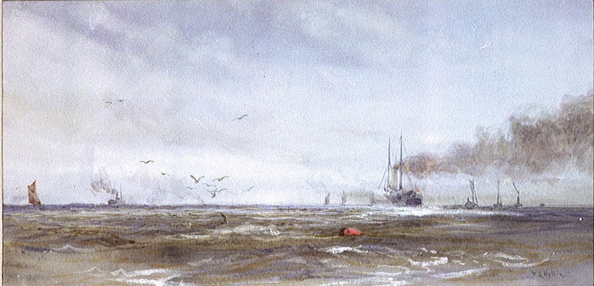
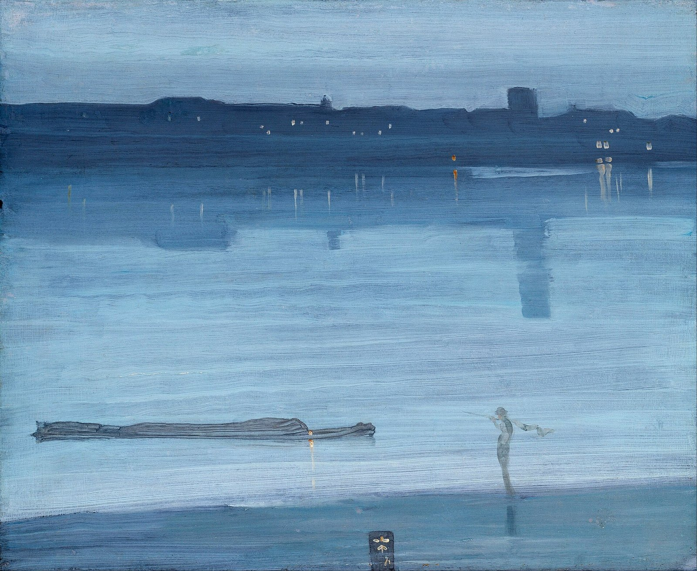
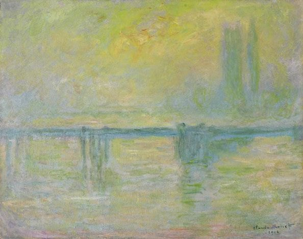
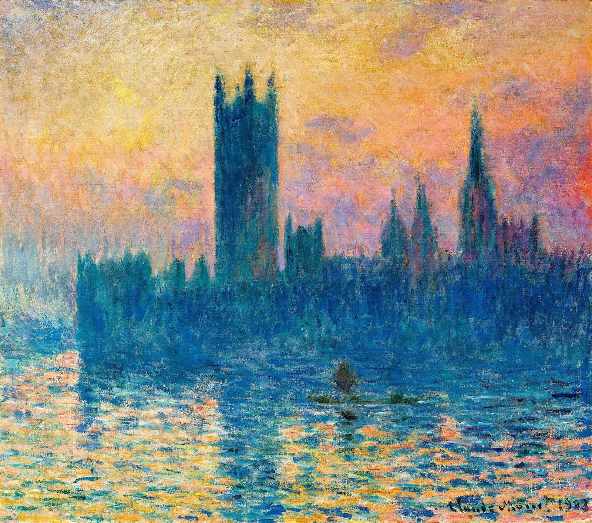
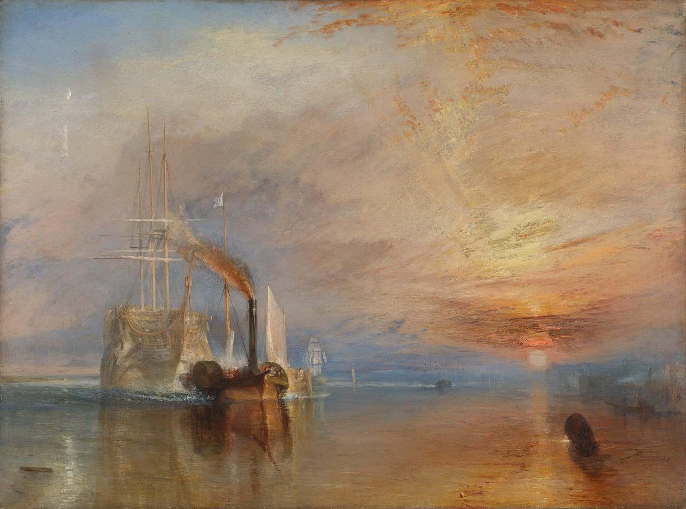
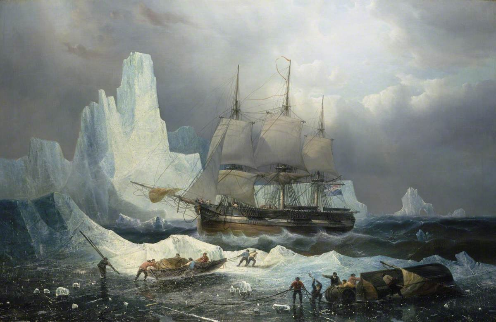
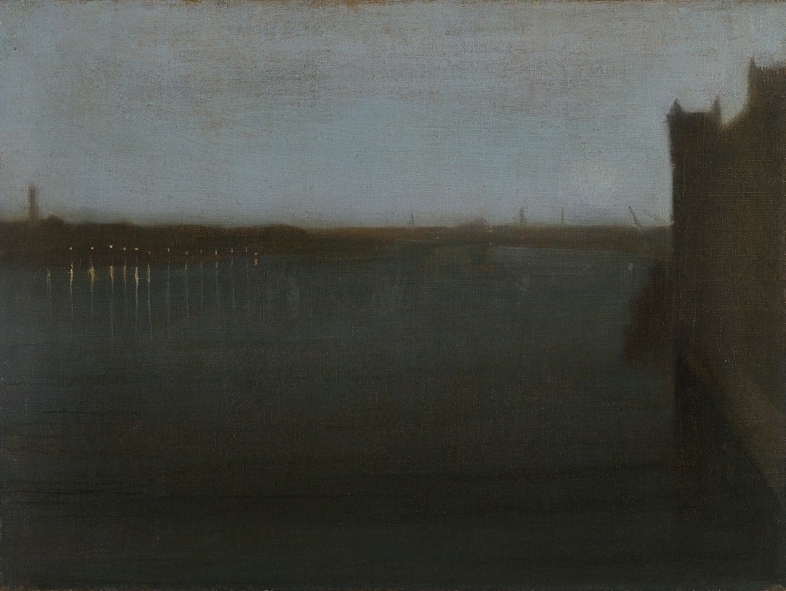

← 目次The Nellie, a cruising yawl, swung to her anchor without a flutter of the sails, and was at rest. The flood had made, the wind was nearly calm, and being bound down the river, the only thing for it was to come to and wait for the turn of the tide.
The sea-reach of the Thames stretched before us like the beginning of an interminable waterway. In the offing the sea and the sky were welded together without a joint, and in the luminous space the tanned sails of the barges drifting up with the tide seemed to stand still in red clusters of canvas sharply peaked, with gleams of varnished sprits. A haze rested on the low shores that ran out to sea in vanishing flatness. The air was dark above Gravesend, and farther back still seemed condensed into a mournful gloom, brooding motionless over the biggest, and the greatest, town on earth.

The sea-reach of the Thames stretched before us like the beginning of an interminable waterway.
J. M. Whistler, Nocturne: Blue and Silver – Chelsea, 1871／Public domain／Commons
The Director of Companies was our captain and our host. We four affectionately watched his back as he stood in the bows looking to seaward. On the whole river there was nothing that looked half so nautical. He resembled a pilot, which to a seaman is trustworthiness personified. It was difficult to realize his work was not out there in the luminous estuary, but behind him, within the brooding gloom.
Between us there was, as I have already said somewhere, the bond of the sea. Besides holding our hearts together through long periods of separation, it had the effect of making us tolerant of each other’s yarns—and even convictions. The Lawyer—the best of old fellows—had, because of his many years and many virtues, the only cushion on deck, and was lying on the only rug. The Accountant had brought out already a box of dominoes, and was toying architecturally with the bones. Marlow sat cross-legged right aft, leaning against the mizzen-mast. He had sunken cheeks, a yellow complexion, a straight back, an ascetic aspect, and, with his arms dropped, the palms of hands outwards, resembled an idol. The director, satisfied the anchor had good hold, made his way aft and sat down amongst us. We exchanged a few words lazily. Afterwards there was silence on board the yacht. For some reason or other we did not begin that game of dominoes. We felt meditative, and fit for nothing but placid staring. The day was ending in a serenity of still and exquisite brilliance. The water shone pacifically; the sky, without a speck, was a benign immensity of unstained light; the very mist on the Essex marsh was like a gauzy and radiant fabric, hung from the wooded rises inland, and draping the low shores in diaphanous folds. Only the gloom to the west, brooding over the upper reaches, became more sombre every minute, as if angered by the approach of the sun.

Claude Monet, Charing Cross Bridge, Fog, 1903／Public domain／Commons
The day was ending in a serenity of still and exquisite brilliance.

Claude Monet, The Houses of Parliament, Sunset, 1904／Public domain／Commons

J. M. W. Turner, The Fighting Temeraire, 1839／Public domain／Commons
Forthwith a change came over the waters, and the serenity became less brilliant but more profound. The old river in its broad reach rested unruffled at the decline of day, after ages of good service done to the race that peopled its banks, spread out in the tranquil dignity of a waterway leading to the uttermost ends of the earth. We looked at the venerable stream not in the vivid flush of a short day that comes and departs for ever, but in the august light of abiding memories. And indeed nothing is easier for a man who has, as the phrase goes, “followed the sea” with reverence and affection, than to evoke the great spirit of the past upon the lower reaches of the Thames. The tidal current runs to and fro in its unceasing service, crowded with memories of men and ships it had borne to the rest of home or to the battles of the sea. It had known and served all the men of whom the nation is proud, from Sir Francis Drake to Sir John Franklin, knights all, titled and untitled—the great knights-errant of the sea. It had borne all the ships whose names are like jewels flashing in the night of time, from the Golden Hind returning with her rotund flanks full of treasure, to be visited by the Queen’s Highness and thus pass out of the gigantic tale, to the Erebus and Terror, bound on other conquests—and that never returned. It had known the ships and the men. They had sailed from Deptford, from Greenwich, from Erith—the adventurers and the settlers; kings’ ships and the ships of men on ’Change; captains, admirals, the dark “interlopers” of the Eastern trade, and the commissioned “generals” of East India fleets. Hunters for gold or pursuers of fame, they all had gone out on that stream, bearing the sword, and often the torch, messengers of the might within the land, bearers of a spark from the sacred fire. What greatness had not floated on the ebb of that river into the mystery of an unknown earth!... The dreams of men, the seed of commonwealths, the germs of empires.
Hunters for gold or pursuers of fame, they all had gone out on that stream, bearing the sword, and often the torch.

François Musin, HMS Erebus in the Ice, 1846／Public domain／Commons
The sun set; the dusk fell on the stream, and lights began to appear along the shore. The Chapman light-house, a three-legged thing erect on a mud-flat, shone strongly. Lights of ships moved in the fairway—a great stir of lights going up and going down. And farther west on the upper reaches the place of the monstrous town was still marked ominously on the sky, a brooding gloom in sunshine, a lurid glare under the stars.
The sun set; the dusk fell on the stream, and lights began to appear along the shore.

J. M. Whistler, Nocturne: Grey and Gold – Westminster Bridge, 1871–72／Public domain／Commons